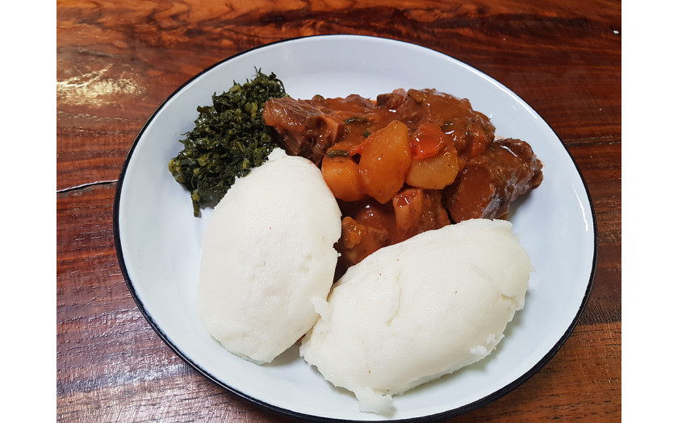

Pap and Beef Stew Recipe

Pap, otherwise known as sadza in the shona language, is Zimbabweans staple food. It is mostly served mostly as dinner with beef stew. It is a delicacy thar no matter where a Zimbababwean goes, they will find a way to prepare it.
Ingredients
- 2 lb beef
- 4 cloves garlic , finely chopped
- 2 tomatoes , chopped
- 1 teaspoon salt
- 1 teaspoon curry powder
- 2 carrots , diced
- 1 cup fresh green beans , cut in 1-inch/2,5cm sections
- 1 tablespoon cornstarch (optional)
- Oil (for frying)
Steps
- Step 1
Cut beef into medium sized chunks. Heat oil in pot. Add beef, garlic and salt. Fry until the meat is a lovely brown color.
- Step 2Add enough water to just cover the meat and reduce heat. Allow to simmer gently and slowly unovered until meat is tender.
- Step 3When the water is entirely reduced, add the onions and curry powder. Fry for 2 minutes. Add the tomatoes and cook for another 3 to 4 minutes or until the tomatoes are tender and cooked through.
- Step 4Add a little bit of water, the carrots and green beans and simmer for another 5 minutes, stirring regularly.